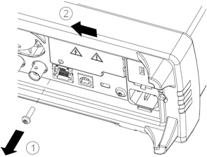
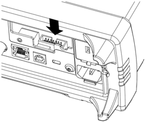
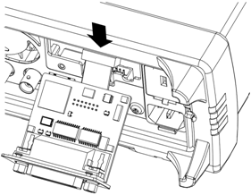
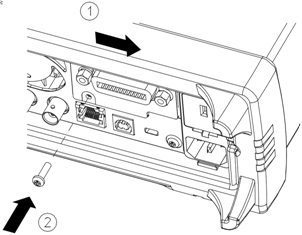

This procedure should be performed by qualified service personnel only. Turn off the power and remove all measurement leads and other cables, including the power cord, from the instrument before continuing.
|
|
This procedure should be performed by qualified service personnel only. Turn off the power and remove all measurement leads and other cables, including the power cord, from the instrument before continuing. |
The following tools are required.

|
|
Retain GPIB Cover PlateAfter installing the GPIB option, retain the cover plate for use in the event that you ever remove the GPIB option. The instrument should never be connected to power or inputs on the measurement terminals without either the GPIB module or the cover plate securely covering the rear-panel opening. |



This concludes the GPIB installation procedure.